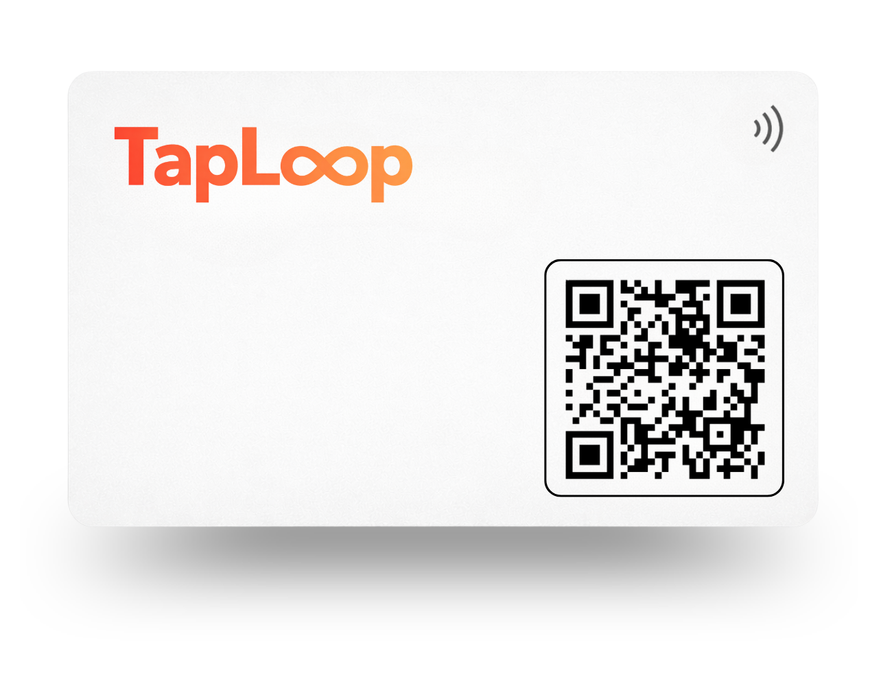
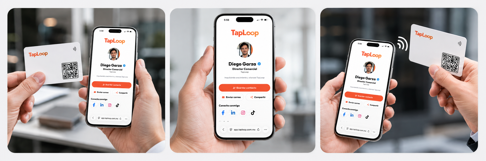
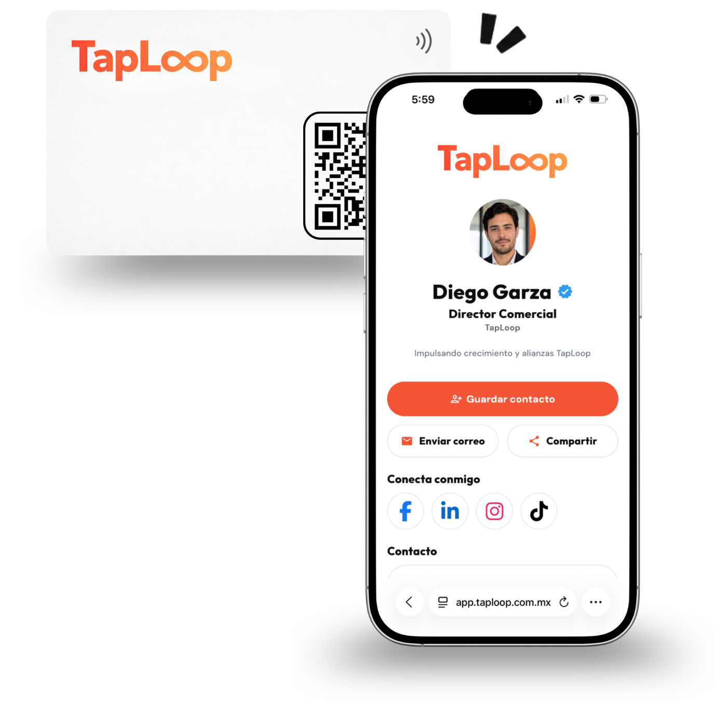

Recibe tu propuesta
Propuesta con diseño, cantidad y necesidades de tu equipo.
 Recibir una propuesta
Recibir una propuesta Cómo funciona TapLoop
Acerca tu tarjeta a un smartphone y tu perfil digital se abre al instante para compartir contacto, WhatsApp, redes y enlaces.

Cotiza, aprueba y comparte
Te guiamos desde la propuesta inicial hasta la entrega de tus tarjetas listas para usar.
Propuesta con diseño, cantidad y necesidades de tu equipo.
Recibir una propuesta Configuramos tarjeta y perfil digital por colaborador.

Fabricamos y enviamos todo listo en 3-5 días hábiles.

Comparte al instante y gestiona perfiles, métricas y leads.

NFC + QR
Una tarjeta, muchas formas de conectar.

Perfil digital TapLoop
Cambia tus datos, enlaces y redes cuando lo necesites sin reemplazar tu tarjeta.
Cambia tu información en cualquier momento.
Mantén tu perfil alineado con tu marca.
Ve cómo se mostrará antes de publicar.

Perfil digital
Comparte contacto, WhatsApp, redes, enlaces y agenda desde una misma página.
Datos al celular.
Conversación directa.
Contacto rápido.
LinkedIn, Instagram y más.
Tráfico a tu página.
Reuniones y leads.
Plataforma TapLoop
Mide interacciones, recibe contactos y administra tu información desde un solo lugar.

Consulta visitas, taps NFC y clics.

Recibe datos y da seguimiento a oportunidades.

Administra perfiles y tarjetas desde un mismo espacio.
Leads y conversión
Permite que tus contactos agenden una reunión o te dejen sus datos directamente desde tu perfil.
Facilita que den el siguiente paso.
Recibe nombre, correo y teléfono.
Consulta tus leads desde TapLoop.
Una misma identidad de marca, un perfil por colaborador y administración centralizada.
Uno por integrante.
Logo y colores de tu empresa.
Administra tarjetas y perfiles.
Resolvemos las dudas más comunes sobre cómo funciona TapLoop.
No. El perfil digital se abre directamente en el navegador del teléfono mediante NFC o código QR.
Sí. Los teléfonos compatibles pueden abrir el perfil con NFC y el código QR funciona como alternativa universal.
La tarjeta también incluye código QR para abrir el mismo perfil desde la cámara del teléfono.
Sí. Puedes actualizar datos y enlaces del perfil digital sin reemplazar la tarjeta física.
Sí. Ambos accesos llevan al mismo perfil digital TapLoop.
Sí. Puedes compartir tu perfil tantas veces como necesites.

Cotiza tu TapLoop
Cuéntanos qué necesitas y preparamos tu TapLoop personalizada.